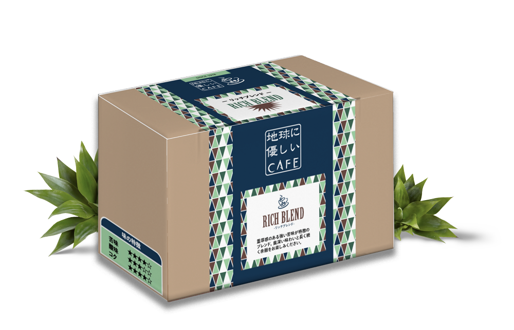
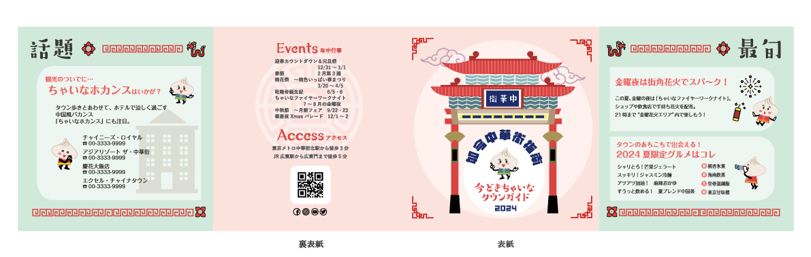
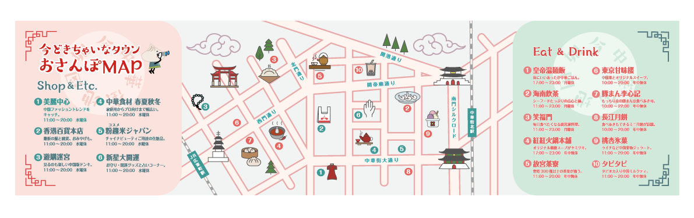
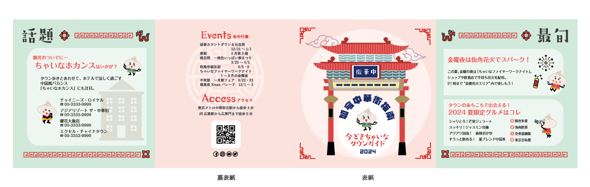
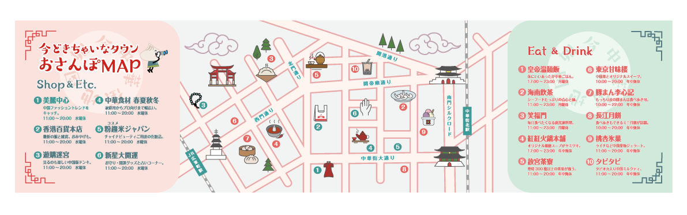

グラフィック デザイン
01.
- 名刺
- シンプルで読みやすく、様々な種類のビジネスに適したデザインの名刺。
店のサイトのQRコード、最寄り駅からのマップなど、必要に応じてデザインします。
- パンフレット
- 人を振り向かせるような大胆なデザインを心がけています。ビビッドな表現でも、重要な情報の明確さ、読みやすさを重視しています。
- 折込みパンフレット
-
これは、イラスト付きのチャイナタウン散策マップを制作したグループプロジェクトです。訪れる人々にとってコンパクトで使いやすいガイドとなるように設計されました。マップには人気のスポットや観光名所、その他の見どころがわかりやすく楽しいイラストで紹介されています。
私は表紙と裏表紙のデザイン、およびキャラクターデザインを担当しました。キャラクターには、マップに親しみやすさと遊び心を添える愛らしい小籠包のキャラクターを制作しました。（架空のプロジェクト）
パッケージ デザイン
01.

- 有機コーヒー専門カフェ
店のオリジナルブレンドコーヒー豆2袋が入る、ギフト用のパッケージ。素材は100％再生紙。

- 京都の和菓子屋「しずく庵」
菊の花びら一枚一枚を職人が刻んで作る「はさみ菊」のお土産用パッケージ。


 


